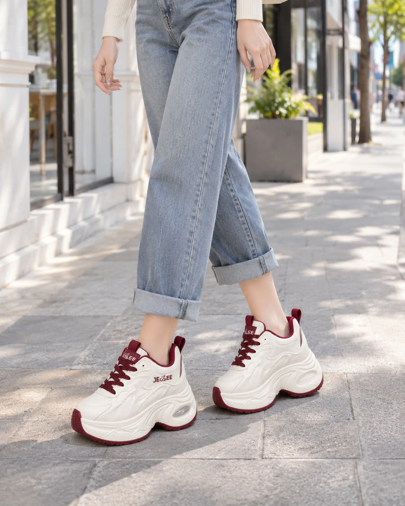

Giày độn đế 9cm da Microfiber 3 màu — Review JB553
9cm là mức độn "vàng" — cao rõ rệt mà bước đi vẫn cân đối, chắc chân. JB553 là sneaker da Microfiber trẻ trung, có tới 3 màu Đỏ / Kem / Xám dễ phối, đế PU siêu nhẹ — lại còn tặng kèm tất.


9cm — mức độn "vàng" cho đời thường
9cm nằm ngay vùng lý tưởng: cao hơn hẳn giày thường để tôn dáng, tạo hiệu ứng chân dài, nhưng chưa cao tới mức phải giữ thăng bằng kỹ. Xỏ vào là đi tự nhiên — hợp cả nàng mới làm quen giày độn lẫn người đã quen muốn một đôi "đi đâu cũng được".
JB553 mang form sneaker hiện đại, khỏe khoắn mà vẫn nữ tính, dễ dàng biến hóa từ đi học, đi làm đến dạo phố cuối tuần.


Ảnh thật JB553: (trái) banner độn đế 9cm · (phải) chất da Microfiber & đế cao.
Da Microfiber & đế PU — nhẹ, êm, dễ chăm
Thân giày dùng da Microfiber: bề mặt mịn đều, hiện đại, dễ phối nhiều phong cách và dễ lau chùi. Phần đế Polyurethane (PU) nhẹ, đàn hồi tốt, giúp đôi giày giữ dáng chắc chắn mà vẫn êm ái khi di chuyển cả ngày.


3 màu — chọn màu nào hợp bạn?
- Đỏ — nổi bật, cá tính và đầy năng lượng, làm điểm nhấn cho outfit.
- Kem — nhẹ nhàng, thanh lịch, dễ kết hợp nhất với mọi trang phục.
- Xám — hiện đại, trung tính, hợp đi làm và phong cách tối giản.
Phối đồ với sneaker độn 9cm
- Quần jeans / quần short — năng động, trẻ trung, hợp bản Đỏ hoặc Xám.
- Chân váy — tạo hiệu ứng chân cao, thon; bản Kem lên đồ nữ tính.
- Quần suông + sơ mi / blazer — công sở trẻ trung mà vẫn chỉn chu.
Phân vân 8cm hay 9–10cm? Đọc thêm: cách chọn độ cao giày độn hợp dáng.
Thông số nhanh mẫu JB553
| Tiêu chí | JB553 | Ghi chú |
|---|---|---|
| Tăng chiều cao | 9cm | Mức vàng, cân đối dễ đi |
| Chất liệu | Da Microfiber | Mịn đều, dễ phối, dễ chăm |
| Phiên bản màu | 3 màu | Đỏ · Kem · Xám |
| Ưu đãi | Tặng tất | Kèm 1 đôi tất theo chương trình |
Câu hỏi thường gặp
Giày độn đế 9cm cao cỡ nào?
9cm cao hơn hẳn giày thường, tôn dáng rõ mà bước đi vẫn cân đối, chắc chân — hợp cả người mới lẫn người đã quen đi giày độn.
JB553 có mấy màu?
3 màu: Đỏ cá tính, Kem thanh lịch, Xám trung tính — đều dễ phối đồ.
JB553 giá bao nhiêu, còn size nào?
Giá và size còn hàng xem trực tiếp tại trang mẫu JB553 hoặc nhắn Zalo để được tư vấn nhanh.
Thích một đôi độn 9cm nhiều màu, dễ phối, tặng kèm tất?
Nhắn Jebee size chân & màu thích (Đỏ / Kem / Xám) — tụi mình tư vấn mẫu JB553 trong 1 phút, freeship toàn quốc, đổi size miễn phí 15 ngày.
Nhắn Zalo tư vấn Xem mẫu JB553